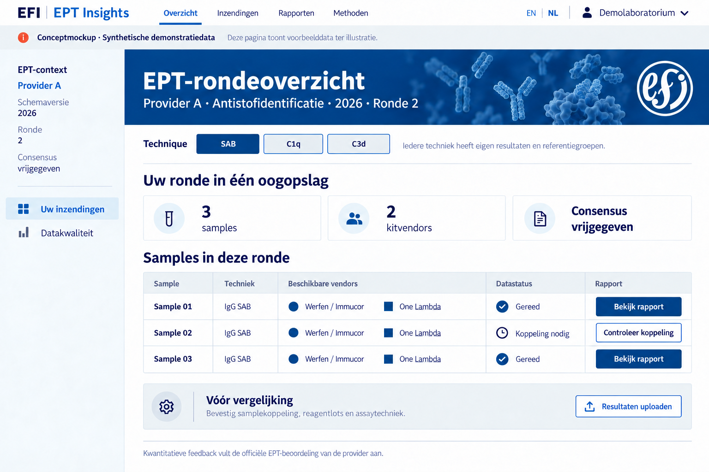
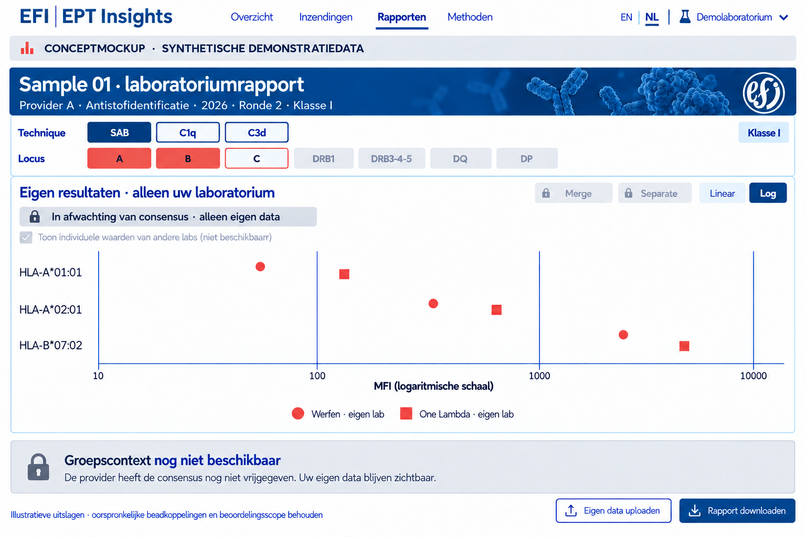
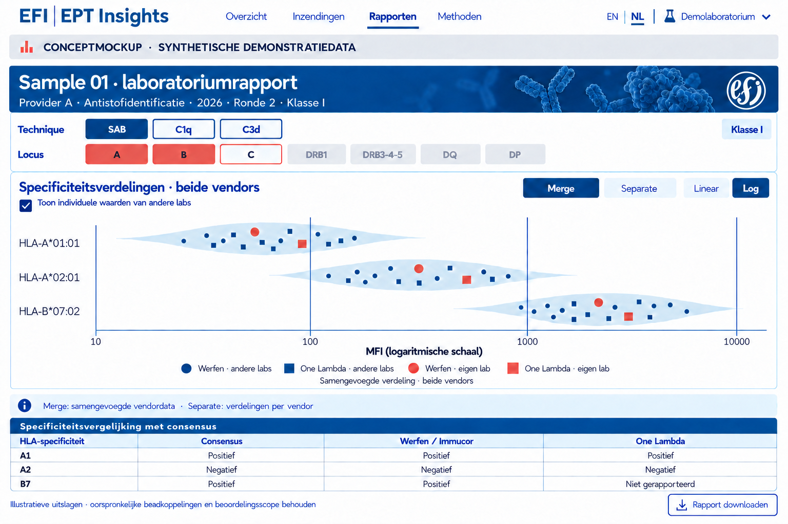

Versie 1.0 · 15 oktober 2026 · Publieke ontwerpdocumentatie
Doel
Een tweetalig onderzoeksprototype voor aanvullende analyse van HLA single antigen bead-resultaten binnen EPT-rondzendingen. Deelnemers kunnen eigen metingen onderzoeken en die na providervrijgave vergelijken met passende referenties. Dit is een ontwerp in ontwikkeling, geen officiële EFI-dienst, accreditatiebeoordeling of medisch advies.
EPT-context en identiteit
De structuur is provider → schema/jaareditie → ronde → sample → techniek → lotgebonden meetdoel. Gelijke samplecodes bij verschillende providers betekenen niet hetzelfde materiaal. Providers, rondes en samples blijven gescheiden. Regio is organisatiemetadata en bepaalt geen peergroep. De actuele deelname van providers wordt pas na bevestiging geregistreerd.
Eigen data en vrijgave
Een deelnemer kan vóór consensusvrijgave eigen data uploaden, valideren en bekijken. Groepsgegevens blijven afgeschermd. De bevoegde provider uploadt de officieel vrijgegeven consensus met scope en versie; na validatie en verwerking opent de passende groepscontext voor geautoriseerde deelnemers. Alleen een datum, bestandsnaam of handeling van een deelnemer kan dat niet activeren.
De lokale eerste versie verwerkt bestanden uitsluitend in de browser. Er is nog geen centrale upload, accountomgeving of productierechtenmodel. Een lokale demonstratie van consensusvrijgave is geen echte providerautorisatie. Voor echte samenwerking zijn private inzendcontexten en toegangscontrole nodig.
Technieken en vendors
Reguliere IgG SAB, C1q en C3d zijn parallelle, afzonderlijke technieken. Gedeelde beadsets maken meetwaarden of consensus niet uitwisselbaar. In de interface staat SAB voor IgG SAB. Werfen/Immucor en Thermo Fisher/One Lambda krijgen afzonderlijke importadapters; de eerste implementatie richt zich op Werfen. Een ongevalideerd formaat wordt expliciet geweigerd.
Labrapport
Technique biedt SAB/C1q/C3d. Locus biedt A, B, C, DRB1, DRB3-4-5, DQ en DP. Beide rijen lijnen uit; meerdere loci zijn selecteerbaar. De grafiekas toont beadsamenstelling als PL String, nooit beadnummers als hoofdlabel. DQ/DP-ketens worden alleen gecombineerd bij een bevestigde koppeling; een onduidelijke export wordt niet stilzwijgend gereconstrueerd.
Merge berekent één violin uit de samengevoegde geldige vendormetingen voor hetzelfde doel. Separate berekent een violin per vendor. Context, techniek, meetgrootheid en expliciete lotselectie blijven gelijk. Een lab kan twee vendormetingen bijdragen maar telt één keer als uniek lab. Toon aantallen labs én metingen. Eigen labwaarden zijn standaard uitgesloten van de referentie.
MFI-assen starten altijd op log10, met oorspronkelijke MFI als labels. Nul, negatief, ontbrekend en ongeldig blijven afzonderlijk geregistreerd; geen stille vervanging door 1. Kleine groepen krijgen geen kunstmatige violin. Peerpunten gebruiken cirkels voor Werfen en vierkanten voor One Lambda, allemaal blauw. Eigen punten hebben dezelfde vendorvorm, zijn groter en koraalkleurig. Peerpunten bevatten geen labidentificatie.
Input en output
Input bestaat uit bronexport, techniek, lotmetadata en bevestigde koppeling van lokale samples aan de EPT-context. EDS-bestanden ondersteunen lotgebonden beadannotaties. Controlebeads worden onderscheiden van meetdoelen. Bronwaarden blijven ongewijzigd; correcties en normalisaties zijn verschillende meetgrootheden. HAML kan een uitwisselingsroute ondersteunen, maar is geen vervanging voor provider- en vrijgavemetadata.
Output omvat importvalidatie, eigen meetwaardetabel, contextgebonden grafieken en reproduceerbare JSON/CSV/SVG-exports met bronhash, methodeversie, inclusies, uitsluitingen en filterinstellingen. Alleen een providerconsensus levert officiële consensusuitslagen; een MFI-cutoff wordt daar niet voor in de plaats gesteld.
Privacy en publicatie
Deze publieke site bevat uitsluitend goedgekeurde ontwerpdocumentatie, stijlafspraken en synthetische illustraties. Private correspondentie, bron-PDF’s, patiëntvelden, tokens en echte deelnemersdata worden niet gepubliceerd. Het verwijderen van namen maakt peerdata niet automatisch openbaar. GitHub Pages is de publieke documentatielaag; vertrouwelijke data vereisen een afzonderlijke private context.
Ontwerpbeelden
De beelden zijn synthetische oriëntaties; de implementatie gebruikt originele logo’s en SVG-componenten.



Publieke bronnen
- EFI EPT-commissie
- EFI EPT-providers
- HAML
- IHIW-converters
- hlapro en publieke mockbestanden
- PL String-specificatie
Publieke bronverwijzingen zijn geen bevestiging van samenwerking of deelname. EFI-stijlgids.